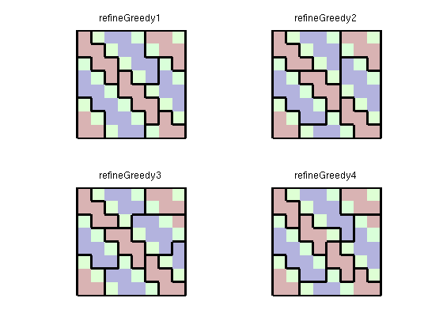

Contents
Example 1: The Nonuniform Coarsening Algorithm
Our first example shows the four basic steps of the nonuniform coarsening algorithm proposed by Aarnes et al. [1]. The algorithm is an ad hoc approach for creating a coarse grid that distinguishes high-flow and low-flow regions, thereby trying to mimic a streamline-type grid without moving grid points. The algorithm consists of four steps:
- Segment log(v) to get an initial partition.
- Merge blocks whose volumes are below a lower limit.
- Refine blocks in which the flow exceeds an upper limit
- Repeat Step 2 and terminate.
The algorithm is a special case of a more general framework for creating coarse grids based on amalgamation of cells from a fine grid, as described by Hauge et al. [2].
References:
- J. E. Aarnes, V. L. Hauge, Y. Efendiev, Coarsening of three-dimensional Structured and unstructured grids for subsurface flow. Advances in Water Resources, Volume 30, Issue 11, November 2007, pp. 2177--2193.
- V. L. Hauge, K.-A. Lie, J. R. Natvig, Grid coarsening based on amalgamation for multi-fidelity transport solvers, September 2010. http://www.sintef.no/Projectweb/GeoScale/Publications/
try require gridtools catch me mrstModule add gridtools; end try require coarsegrid catch me mrstModule add coarsegrid; end
Create a simple model
We consider an 8x8 Cartesian grid with an artificial flow indicator in the form of a sine-wave making an angle with the coordinate directions.
G = computeGeometry(cartGrid([8 8])); iVel = sin(pi*(G.cells.centroids(:,1) + G.cells.centroids(:,2))/3); iVel = iVel - min(iVel) + 1; iVol = ones(size(iVel)); NL = 4; NU = 8;
Segement indicator
In the first step, we segment the indicator value into ten bins to distinguish the high-flow and low-flow zones.
p1 = segmentIndicator(G, iVel, 10); plotCoarseningStep(p1, G, iVol, iVel, NL, NU, 1, 1);
Merge blocks
The segmentation will typically create a speckle of small blocks that we do not want in our coarse grid. We therefore merge blocks that have a volume below NL*G.cells.volumes/G.cells.num with the neighboring block that has the closest iVel value.
p2 = mergeBlocks2(p1, G, iVol, iVel, NL, NU); plotCoarseningStep(p2, G, iVol, iVel, NL, NU, 2, 1);
Refine blocks
In the next step we check if there are any blocks in which the iVel indicator exceeds the prescribed upper bound and if so we refine these blocks. To this end, we use a greedy algorithm that starts at one cell and grows a new block until the upper bound is exceeded. If necessary, the process is repeated.
p3 = refineBlocks(p2, G, iVel, NU, @refineGreedy); plotCoarseningStep(p3, G, iVol, iVel, NL, NU, 3, 1);
Merge blocks
The greedy refinement may have created some small cells (typically if the blocks to be refined only slightly exceeds the upper bound). We therefore perform a second merging step to get rid of blocks that have too small volume.
p4 = mergeBlocks2(p3, G, iVol, iVel, NL, NU); plotCoarseningStep(p4, G, iVol, iVel, NL, NU, 4, 1);
Improved refinement algorithm - part 1
The refineGreedy routine grows blocks somewhat agressively by adding rings of neighbouring cells at the time. The refineGreedy2 method only adds the neighbouring cells necessary to reach the upper limit.
p3 = refineBlocks(p2, G, iVel, NU, @refineGreedy2); p5 = mergeBlocks2(p3, G, iVol, iVel, NL, NU); plotCoarseningStep(p5, G, iVol, iVel, NL, NU, 4, 1);
With such small grid blocks, the algorithm does not have many choices and therefore produces a grid that has two blocks that violate the upper bound. In general, it is our experience that refineGreedy2 produces better results than the original algorithm proposed by Aarnes et al.
Improved refinement algorithm - part 2
Even better results may be obtained if we use the refineGreedy3 method in which the neighbouring cells are sorted in descending order in terms of the number of faces shared with cells in the growing block. Unfortunately, the method is quite expensive and its use is not recommended for very large models.
p3 = refineBlocks(p2, G, iVel, NU, @refineGreedy3, 'nlevel',1);
p6 = mergeBlocks2(p3, G, iVol, iVel, NL, NU);
plotCoarseningStep(p6, G, iVol, iVel, NL, NU, 4, 1);
In this particular example, the result is 'perfect' since there are no blocks that violate the lower and upper bounds. In our experience, however, it is hard to create grids that satisfy both constraints and these should generally be seen as soft (and indicatory) bounds.
Improved refinement algorithm - part 3
As a fourth alternative, we can use the refineGreedy4 method in which the neighbouring cells are sorted in descending order in terms of the discrepancy between the flow indicator value in each neighbour cell and the growing block.
p3 = refineBlocks(p2, G, iVel, NU, @refineGreedy4, 'nlevel',1);
p7 = mergeBlocks2(p3, G, iVol, iVel, NL, NU);
plotCoarseningStep(p7, G, iVol, iVel, NL, NU, 4, 1);
In this particular example, the result is no better than for refineGreedy2. However, the method may be quite useful in some other examples.
Compare the different coarse grids
clf p = [p4 p5 p6 p7]; for i=1:4 subplot(2,2,i); plotCellData(G,iVel,'FaceAlpha',.3); outlineCoarseGrid(G,p(:,i),'Color','k'), title(sprintf('refineGreedy%d',i)); axis off equal end